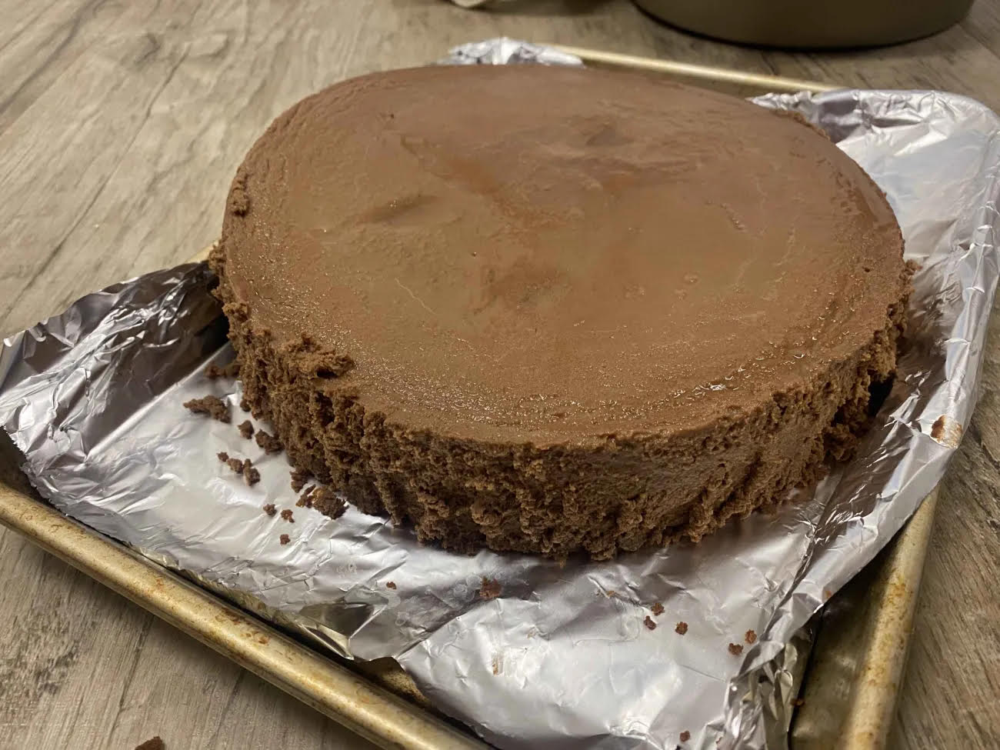

This recipe was provided with the permission from my partner! Its a simple cheesecake recipie that doesnt require much and has a sweet+bitter taste depending on the type of chocolate you use. The cake itself is very creamy and pairs well with milk. Try it out and see if you like it!
I used two pots, one smaller one to hold the chocolate, and a bigger one to hold the small pot and simmering water.
Smaller pan means faster cooking time (ex. Cupcake tin).